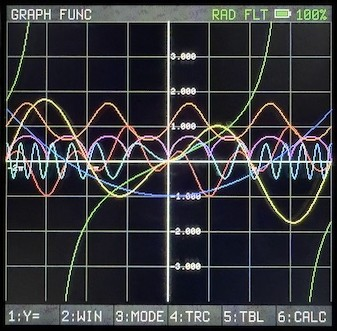

A TI-83/84-inspired graphing calculator, running as firmware on the ClockworkPi PicoCalc. Graphing, statistics, matrices, complex numbers and a symbolic CAS — on a microcontroller with 264 KB of RAM.

Natural math display with stacked fractions and raised exponents.
Exact forms where they exist — sqrt(8) shows as 2√2,
sin(pi/3) as √3/2.
Function, parametric, polar and sequence modes. Trace, zoom, shading, a CALC menu (zero, min/max, intersect, dy/dx, fnInt), value tables and split-screen.
Six lists plus named lists, 1-var and 2-var stats, ten regression models, seven distributions, the full inference suite, and stat plots.
Ten matrix variables with determinant, inverse, row-echelon form, eigenvalues and eigenvectors — real and complex spectra.
a+bi and r∠θ modes throughout, including complex-valued variables, lists and matrices.
A CAS with simplify, expand, factor, differentiate, solve and a bounded symbolic integrator — callable inline from the home screen.
| Pico 1 H (RP2040) | Pico 2 H (RP2350) | |
|---|---|---|
| CPU | 2× Cortex-M0+ @ 133 MHz | 2× Cortex-M33 @ 150 MHz |
| SRAM | 264 KB | 520 KB |
| Flash | 2 MB | 4 MB |
| FPU | None — ROM softfloat | Single-precision hardware |
Both are supported targets, and every release is verified on both. Hardware differences stay inside the platform layer; the calculator itself does not know which chip it is running on.
Hold BOOTSEL while plugging in USB-C, then drop the
.uf2 onto the volume that appears. That is the whole
procedure.
Already running Graphite? Home → F4 MODE → “Reboot to bootloader” saves reaching for the button.
There is also a help browser on the device itself — type help (or ?) on the home screen — whose function catalog is generated from the same table the parser registers from, so it cannot drift from what the firmware actually accepts.
Graphite is free and open source, built for the fun of it. If it is useful to you and you would like to say thanks, there is a tip jar — no obligation, and nothing in the firmware is gated behind it.